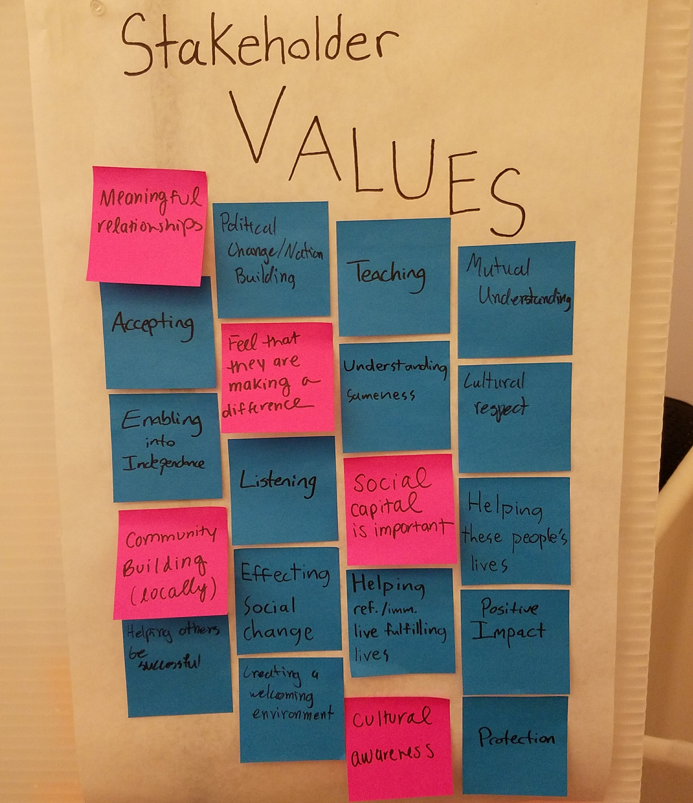

January-May 2018
UOCD
Because such a large part of engineering education is focused on the end product and not who we are designing for, User-Oriented Collaborative Design is a class that focuses on the beginning of the design cycle. The semester-long course is focused on learning from and working with a specific user group to identify their needs and ultimately propose a thoughftful experience that could enrich their lives.
My team worked with local refugee and immigrant workers including community organizers, program leaders, and ESOL (English for Speakers of Other Languages) volunteers The first third of the semester consisted of meeting our user group and getting to know what their joys and pains are in the sector of refugee and immigrant work.
The second third of the course was the synthesis phase. This involved using lots of frameworks to organize our ideas and map out insights we had gained from interviews. We used these to start brainstorming potential pain points and have more directed co-design sessions with our users. This was the point in the semester that the classrooms were covered wall to wall (additional board having been put up to provide more surfaces) with brightly colored post its and posters that were the result of many long meetings recounting, discussing, and brainstorming.
The third portion of the class involved narrowing and selecting one idea to represent a potential experience for our users. Ultimately, we chose an activity tool that encompasses different elements of story telling, feedback, and progress tracking. This way the organizers would be able to do more with what they learned and the refugees and immigrants that participated in the different programs would be able to see their own progress and have a platform to tell their own unique stories.
Among the many frameworks for interviewing, idea organization, and needs/values assessment, there were also individual reflections that allowed us each a chance to reflect on our thoughts at different points in the semester. I learned a lot about myself and how I can personally improve in practices of design, and many of these ideas can be applied to other areas of design and human-centered work.
Phase 1 Reflection on inherent biases
Phase 2 Reflection on the importance of the unconventional ideas
Phase 3 Reflection on the danger of getting too caught up in the details
